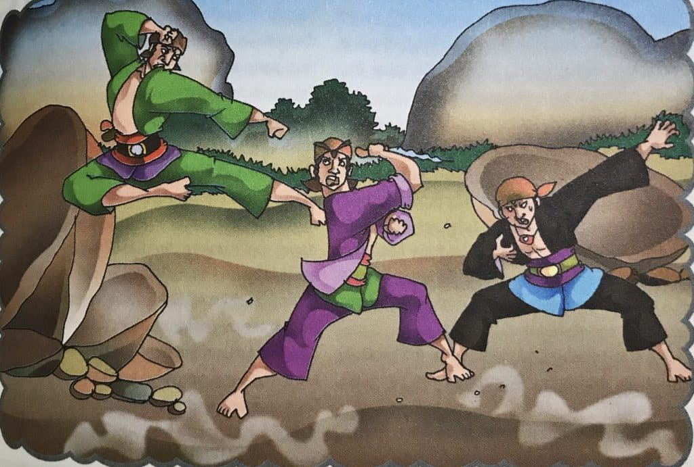

ꦱꦼꦗꦫꦃ
Aksara Jawa asalé saka aksara Brahmi, sing mlebu ing Nusantara liwat pengaruh budaya Hindu-Buddha sekitar abad ke-4 Masehi. Aksara Brahmi iki minangka pondasi kanggo perkembangan aksara-aksara ing Asia Tenggara, kalebu aksara Kawi. Ing abad ke-8 Masehi, aksara Kawi mulai digunakaké ing prasasti-prasasti lan cathetan budaya, utamane ing kerajaan-kerajaan kuna kaya Medang, Sriwijaya, lan Majapahit.
Nalika jaman Majapahit, aksara Kawi ngalami modifikasi lan ngasilaké aksara Jawa sing kita kenal saiki. Aksara Jawa iki ditata kanthi urutan hanacaraka, sing dadi dhasar sistem tulisan iki. Aksara Jawa ora mung digunakaké kanggo nulis, nanging uga dadi simbol budaya lan identitas masyarakat Jawa.
Miturut legenda, aksara Jawa diciptakake dening tokoh mitologis Aji Saka. Ing crita, Aji Saka nglawan raja kejam, Dewata Cengkar, sing nyengsaraké rakyat Medang Kamulan. Aji Saka kanthi pinter ngalahake Dewata Cengkar lan mbebasaké rakyat saka tekanan. Nanging, sajrone pertempuran, rong kawulane, Dora lan Sembada, padha mati geger nalika nglindhungi pusakane.
Peristiwa iki digambarke ing urutan aksara hanacaraka, sing ora mung dadi cara nulis, nanging uga simbol pengorbanan, kesetiaan, lan nilai-nilai luhur liyane. Legenda Aji Saka minangka pengingat pentingé rasa gotong royong lan tanggung jawab, sing terus dilestarikan ing budaya Jawa nganti saiki. Aksara Jawa saiki isih digunakaké lan diajarke, nglambangake warisan budaya sing kaya lan berharga.

ꦲꦸꦫꦸꦥ꦳꧀ꦗꦮ
.png)
Huruf Jawa iku sistem penulisan tradisional sing digunakake kanggo nulis basa Jawa lan kalebu ing kelompok aksara Brahmi. Aksara iki wis ana sejarah sing suwe, diperkirakan wis ana wiwit abad kaping 9. Aksara Jawa iku aksara silabik, ing ngendi saben huruf biasane makili siji suku kata, dudu mung siji swara konsonan utawa vokal.
Aksara Jawa nduweni rong tipe utama, yaiku huruf dhasar lan huruf tambahan sing digunakake kanggo nulis vokal lan konsonan. Saliyane kanggo nulis basa Jawa, aksara iki uga digunakake kanggo sawetara basa liyane ing Indonesia, kaya basa Sunda lan Madura, kanthi variasi tartamtu.
Aksara Jawa duweni nilai budaya sing dhuwur lan asring dipelajari minangka bagéan saka warisan budaya lokal. Senadyan ing urip sehari-hari aksara Latin luwih umum digunakake, upaya kanggo nglestarekake lan sinau aksara Jawa isih ditindakake, utamane ing kalangan generasi muda. Aksara iki dadi simbol identitas lan kebanggaan budaya Jawa.
ꦥꦱꦔꦤ꧀
Pasangan ing aksara Jawa iku sawijining unsur penting kanggo nyambungake aksara tanpa swara vokal, supaya swara ing saben suku kata bisa nyambung kanthi runtut. Kanthi nglebokake pasangan, aksara sadurunge ora duwe vokal lan langsung nyambung karo aksara sabanjure. Tuladhane, ing tembung ꦲꦤꦏ꧀ꦱꦱ꧀ꦱ sing ateges "anak sastra," aksara ꦏ ngowahi wujud dadi pasangan, ngilangi vokal saka aksara ꦤ sadurunge, supaya bisa nyambung langsung karo aksara ꦱ.
ꦄꦁꦏ

Angka Jawa iku sawijining sistem angka tradisional sing digunakake déning masyarakat Jawa kanggo nulis angka ing macem-macem konteks budaya lan sajarah. Sistem angka iki nduwé simbol-simbol unik sing béda karo angka Arab (0-9) sing luwih umum dikenal saiki. Saben angka saka 0 nganti 9 nduwèni simbol khusus lan aran sing unik.
Contoné, angka siji disebut "siji" kanthi simbol ꧑, angka loro disebut "loro" kanthi simbol ꧒, lan sakteruse nganti angka sanga, yaiku angka 9, sing disebut "sanga" nganggo simbol ꧙. Saben angka iki nduwé arti sing ora mung minangka simbol matematis, nanging uga nggambarake kekayaan budaya Jawa sing wis ana turun-temurun.
Angka-angka Jawa iki bisa ditemoni ing naskah kuno, prasasti, lan seni budaya Jawa liyané. Kajaba iku, angka iki uga minangka bagéan saka warisan budaya lan identitasé masyarakat Jawa, sing nuduhaké betapa sugihé sajarah lan tradhisi Nusantara sing terus lestari.
Quizzz
SING GAWE

Nabila Maisie Ardelia
Muhammad Nurul Abshoor
Razya Fahmi Afrianto

Siam Al Sobari
Vanesha Maulidya Pristiany